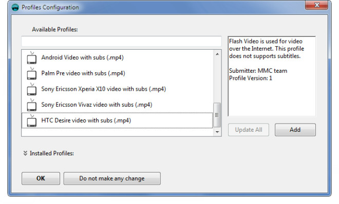
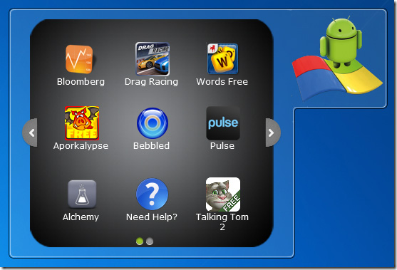
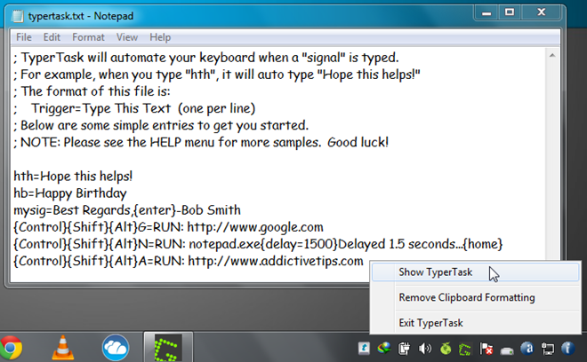
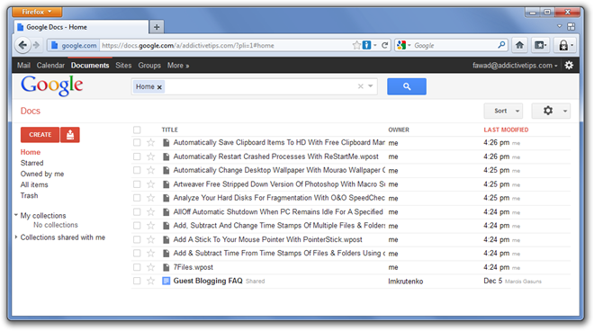

At the dawn of 2011, we provided you with a list of 150 best Windows application of 2010. This, year we covered not only Windows software, but also Mac OS X and Linux applications in great number. Since Windows is the most widely used operating system, we tried to keep our focus on finding and covering best Windows software, tricks and tips. While it is important to look for all the good things that the future might hold, it is also worth looking back to see the fine finds of previous year. Keeping the tradition alive, we now have a compilation of the 150 best Windows applications of the year 2011. So, it’s time to browse through some extremely handy applications and pick the ones that best suit your needs.
1. QVIVO Media Center (Best Alternative for Windows Media Center)
2. Metro Home (Windows Phone 7 Widgets On Desktop)
3. focus booster (Pomodoro Technique based Time Management Application)
Also check out Pomodo7o.
4. DVDVideoSoft FreeStudio (Comprehensive Multimedia Converter and Burner with 40+ tools)
5. AllMyApps (App Store For Windows With Web Support)
6. FTP Scheduler (Schedule FTP File Uploads To Server)
7. AutoSensitivity (Set Different Speed Of Touchpad and Mouse)
8. Apple Wireless Keyboard (An AutoHotKey Script to use Apple Keyboard under Windows 7)
9. TweakIE9 (Add Security & Bring Tab Groups To Internet Explorer 9)
10. CSVed (Comprehensive tool to edit and manipulate CSV & like files)
11. Wii Backup Fusion (Backup, Repair, Covert and Transfer Wii Nintendo Games)
12. SaveGameBackup (Backup Games and Restore Their Progress)
Also check out Gameston.
13. Mousenitor (Prevent Mouse from Moving Across the Attached Monitor Screens)
14. Ncode.ME (Hide & Encrypt Text Message in App Windows via Hotkey Combinations)
15. Motion Man (An opensource tool to convert and burn videos to optical disc)
16. Sigil (EPUB Editor With Full Support For All EPUB Formats)
17. koobits (An eBook reader, manger and downloader, supporting PDF, EPUB, XML, HTML etc formats)
18. min.us (Desktop and Android client for min.us)
19. AthTek NetWalk Personal Edition (Monitor, Analyze and Sniff Network Traffic)
20. RED (Find All Empty Directories & Remove Them In One Go)
21. QManga (Highly Customizable Manga Reader)
Also check out CBR (Comic Book Reader) and Roboreader.
22. ISO Workshop (Comprehensive tool to extract, backup, convert & burn ISO files)
Also check out ISO Toolkit.
23. IP Seizer (Avoid IP Conflicts By Locating Active IPs Across The Network)
24. Joukuu (Access & Manage Dropbox, Box.net, And Google Docs Accounts From Single Window)
25. AVG LiveKive AirSpace (Dropbox-like Cloud Storage Service With 5GB of Free Storage)
26. WebReader (Beautiful Desktop Client for Google Reader)
27. Code Chameleon (Optimize, Format and Clean Programming Language Code)
28. GhostMouse Win7 (Windows Tasks Automation Tool with Hotkey Support).
29. Win To Flash (Bootable USB Builder for all versions Of Windows)
30. Evalaze (Run Applications In Virtualization Sandbox)
31. DiffPDF (Compare Difference Between PDF Files)
32. UMPlayer (VLC media Player Alternative With more than 270 Audio/Video Codecs and YouTube Integration)
33. DP Animation Maker (Create Animations From Still Images)
34. MyWebSql (Opensource MySQL Client With One Click Configuration Feature)
35. LogExpert (Alternative To Unix Tail Command For Windows)
Also check out Glogg.
36. TinyGrab (Upload Images To Custom Servers, Amazon S3, Rackspace and MobileMe)
37. streamWriter (Stream and Record Internet Radio Streams)
38. Duplicate Commander (Search, Remove and Manage Duplicate Files)
Also check out NoDupe
39. Putler (Manage And Anatomize PayPal Transactions)
40. See Through Windows (Change App Window Transparency To See Underlying Windows)
41. CC Auto Updater (Automatically Update Piriform Applications – CCleaner, Recuva, Defraggler & Speccy)
42. Mobile Media Converter (Convert Videos Between Mobile Supported Formats)

43. iPrint (Organize Pages To Print Them on fewer Pages)

44. Ethervane Echo (Automatically Sort Clipboard Entries Into Tabs)
45. Nero Kwik Media (Media Management Suite For Organizing, Viewing and Burning Videos, Pictures And Audio Files).
46. VLC Launcher (Define Audio and Video Parameters for Media Files To Avoid Manual Configurations)
47. MiMdedia (File Sync Service With 7 GB of Free Cloud Storage)
48. VMware vCenter Converter (Convert Physical, Local and Remote Machines into Virtual Machines)
49. SecrectSync (Secure Your Dropbox Account By Encrypting Data)
50. Texmaker (Latex Editor With Spell Check, Auto-Completion & Code Folding Features)

51. NTFS Permissions Tool (Easily Allocate NTFS File and Folder Permissions)
52. Wuala (Cloud Storage Service With Automatic Backup, File Versioning, Time Travel and Data Synchronization)
53. Database Editor (Edit Structure of Databases)

54. LXiMedia (DLNA Compatible Media Server Application)
55. DataGrab (Backup User Profiles and Windows Settings)
56. Drops (Offers Unlimited File Upload Storage and Online File Viewing)

57. 7Token Manger (Activate Windows 7 Offline)
58. USB Alert (Get Prompt To Unplug USB At PC Shutdown)
59. Folder Axe (Split Large Folder By File And Size)

60. FileServe Manager (Accelerate Downloads In Chrome and Internet Explorer)
61. WinKey (Assign Custom Shortcuts to Files and Applications).
62. MetroTwit (Twitter Client With Metro UI Style Design)
63. Protect Me (Access Files From Encrypted Containers without Decryption)
64. PDF reDirect (Merge, Encrypt And Optimize Quality Of PDF Files)
65. OSForensics (Extract Forensic Data from Computers)
66. Mosaic (Bring Windows 8 Metro UI to Windows 7)
67. Duplicati (Encrypt and Backup Large Files to the Cloud)
68. Pokki (Pin Web Apps to Windows 7 Taskbar)
69. Desktop Panorama (Preview & Manage Multiple Virtual Workspaces)
70. Google Books Downloader (Download Google Books)
71. SSD – Set Sound Device (Quickly Switch Sound Device In Windows 7)
72. DropboxPortableAHK (Make Your Dropbox Portable)
73. MyCube Vault (Backup Data From Facebook, Picasa and Google Contacts)
74. Hamster Free Book Converter (Convert eBook Files To Any Device Format)
75. Helium Audio Converter (Convert And Analyze Audio Files For Errors)
76. Stellarium (Get Planetarium On Your Computer With Realistic Sky In 3D)
77. TiltShiftGenerator (Add Professional Tilt Shift Effects To Photos)
78. FastPreview (Preview Images In Windows Context Menu)
79. Metro Clock 2 (Get Windows 8 Metro Clock And Image Slideshow)
80. 4Spaces (Easy-To-Configure Secured Web Server With File Groups)
81. GClient (Google+ Desktop Client)
82. MultiMi (Brings Facebook, Twitter & Email to Your Desktop)
83. PhotoBooth (Get Mac Style Photo Booth in Windows)
84. TunnelBear (Free VPN To Access Popular Blocked Websites From USA and UK)
85. Dual Monitor (Add Workable Windows 7 Taskbar To Second Monitor)
86. Transmiti (Translate Text From Any Application with Transmiti)
87. PeaZip (Compress and Extract Archives from Many Formats)
88. Open With Enhanced (Add More Features To Windows 7 ‘Open With’ Dialog Box)
89. Open Freely (View 100 Different File Types with Just One Application)
90. Juice (Subscribe And Download Podcasts)
91. Mouse Without Borders (Control up to 4 PCs With Single Keyboard and Mouse)
92. Daminion (Powerful Multi-User Media Management Software)
93. VBoxLaunch (Launch Virtual Machine From Start Menu & Jumplist)
94. PhraseExpress (All-In-One Tool To Configure All Aspects of Text Expansion)

95. StepShot (Create Procedural Guides & Help Manuals)
96. Tango (Tango’s Voice & Video Chat Client For Windows)
97. MySQLBackupFTP (Create & Schedule MySQL Database Backup To FTP Server)
98. Boray Power (Switch Windows Power Plan Based On System Inactivity)
99. Aero Adjuster (Automatically Adjust Windows 7 Aero Glass Effect According To Wallpaper)
100. Chapter and Verse (Create Audio Books In iTunes Compatible Format)
101. KeepAliveHD (Write A Small Text File On External Hard Drives Prevent Auto Sleep)
102. Ochepyatka (Fix Caps Lock Typos & Convert Text Between Different Keyboard Layouts)
103. Qustodio (Track & Control Kids’ Internet Usage)
104. GFI Backup (Perform Incremental/Decremental & Full Data Backup)
105. Volume Concierge (Create Volume Control Rules & Schedule Them)
106. DualSwap (Swap Windows Between Dual Monitors With A Click)
107. Flitskikker Info Tool (Compare Your System Specs With Game Requirements)
108. ColorUtility (Pick Colors & Extract Color Shades From Images)
109. Image Composite Editor (Stich Photos To Make A Panorama Images)
110. symlinker (GUI-based Tool To Create Symlink, Hardlink & Directory Junctions)
111. EVACopy (Backup & Restore Documents, Favorites & Outlook Mailbox)

112. Prio (Save App Process Priority, Check Network Connection & Integrity)
113. DualClip Translator (Use Hotkeys To Translate Text In Foreign Language)
114. Wondershare Disk Manager (Create, Resize, Delete & Recover Disk Partitions)

115. reSizer (Move, Resize & Toggle App Windows Using Numpad Keys)
Also check out Plumb.
116. BlueStacks (Run Android Apps & Games On Windows)

117. Batch Compiler (Create Batch Files & Convert Them Into EXE file)
118. BreakTimer (Get Alerts For Taking Breaks While Working)
119. Calendar G (Stylish Google Calendar Desktop Client For Managing Tasks)
120. Patch My PC (Search Critical Software Updates & Install Them)
121. WinUSB Maker (Create Bootable USB From Folders & ISO Image)
122. WhatsUp Visual TraceRoute (Analyze Trace Route On Graphs)
123. Edgeless 2 (Wrap Mouse Pointer Around The Screen)
Also check out Unlimited Mouse.
124. Spamihilator (Protect Desktop Email Clients From Spam Mails)

125. Mourao Image Grabber (Batch Download Images From Websites & Forums)
126. Win7Se (Bring Mac OS X Expose feature To Windows 7)
127. TinEye (Find Similar Images On Internet via Right-Click Context Menu)
128. SocialFolders (Sync & Download Facebook, Google Docs, YouTube, Flickr Data)
129. Hamster Free Audio Converter (Profile-Based Audio Converter)
130. Visual Search Pony (Detect & Remove Duplicate Videos)
131. Artweaver (Image Editing Application With Photoshop-like Layer Support)
132. DriverZone (Find All Outdated Drives & Download The Latest Ones)
133. TyperText (Use Keyboard Shortcuts To Launch Apps & Perform Text Expansion)

134. gBurner (Mount up to 16 Virtual Disks Simultaneously)
135. Remote Potato (Turn Windows Media Center Into A Server)
136. Antenna (Search & Record Live Internet Radio Streams)
137. Insync ( Sync Google Docs With Multiple Desktops)
138. KumoSync (Sync Local Folders With Google Docs)

139. WindowSlider (Make You Desktop Infinitely Scrollable)
140. Kindle For PC (Sync And read Kindle eBooks On PC)

141. BDrive (Deploy Cross-Platform Personal Cloud Storage Across Network)
Also check out Tappin.
142. Soluto 2.0 (Remotely Manage And Fix PC Issues)
143. Windows Service Monitor (Monitor Windows Processes And Services)
144. InType (Advanced Text & Programming Editor With Predefined Code Bundles)
145. zeZebra (P2P File Transfer With Contact Management & Bandwidth Control)
146. Sweet Home 3D (Cross-Platform, Interior Home Designing Application)
147. Slow MP3 (Control Speed, Transpose, Transcribe & Play Karaoke of Songs)
148. CopTrans Manager (iTunes Alternative For iDevice Music Management)
149. X-Ray (Scan Suspicious Files With 31 Different Virus Scanners)
150. GoGet (Manage Scattered Data By Copying Only Format-Specific Files)
Phew! That was something. Please note that we left out several good applications while making this list, as mentioning all of them is not possible. If you didn’t find the type of Windows application you were looking for, try using the AddictiveTips Search bar at the top of the page. Feel free to mention your favorite ones in the comment section below.
Happy New Year!


{kind=link}
{kind=link}
{kind=link}
{kind=link}